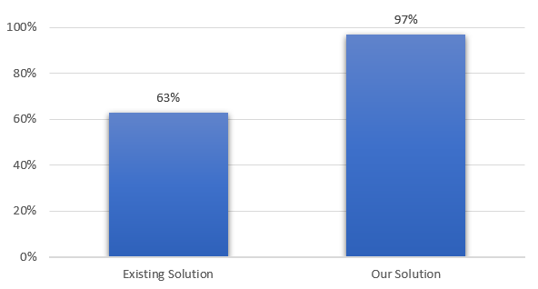

Crop Disease Detection Using Leaf Image Analysis
Can a lightweight deep learning model accurately detect crop diseases from leaf images in real-world conditions while being efficient enough to run on low-cost edge devices for real-time use?
Problem Statement
Crop diseases significantly reduce agricultural productivity and farmer income, especially in regions where access to expert diagnosis is limited. Traditional disease identification relies on manual visual inspection, which is time-consuming, subjective, and often detects infections at a late stage. Therefore, there is a need for an automated, accurate, and low-cost system that can detect crop diseases early from leaf images and provide real-time assistance to farmers, helping reduce crop losses and support sustainable agriculture.
Literature Review / Market Research
Recent research in plant disease detection has widely explored the use of image processing and deep learning techniques to automate diagnosis from leaf images. Early approaches relied on traditional machine learning methods using handcrafted features, which showed limited accuracy and poor adaptability to complex field conditions. With the advancement of Convolutional Neural Networks (CNNs), several studies demonstrated significantly higher classification accuracy by learning color, texture, and pattern variations directly from images. Models such as VGG, ResNet, and EfficientNet achieved strong performance on benchmark datasets like PlantVillage; however, many of these solutions require high computational resources and perform well mainly in controlled environments with clean backgrounds. Recent works have shifted toward transfer learning and lightweight architectures (e.g., MobileNet) to enable faster inference and deployment on mobile or edge devices. Despite these advancements, there remains a gap in developing cost-effective, real-time systems that maintain accuracy under real-world agricultural conditions, highlighting the need for an optimized and deployable disease detection solution.
Research Gap / Innovation
While many existing plant disease detection systems achieve high accuracy using deep learning models, most are trained and tested on controlled datasets with uniform backgrounds and require high computational resources, making them unsuitable for real-time use in rural agricultural settings. There is a lack of solutions that balance accuracy with efficiency and can be deployed on low-cost edge devices for on-field diagnosis. This project addresses that gap by using transfer learning with a lightweight CNN architecture, applying data augmentation to better simulate real-world conditions, and optimizing the trained model for edge deployment using TensorFlow Lite. The innovation lies in creating a practical, resource-efficient system that maintains reliable performance while being accessible and deployable for real-time agricultural use.
System Methodology
Dataset / Input
The dataset used in this project is the Plant Leave Diseases Dataset with Augmentation, obtained from the Mendeley Data repository and downloaded in the Colab environment. The dataset contains thousands of labeled leaf images covering multiple crops and disease categories, providing sufficient class diversity for supervised training. The data was organized into training, validation, and testing sets using an 80:10:10 ratio to ensure unbiased evaluation. During preprocessing, all images were resized to a uniform resolution of 160×160 pixels, normalized using the MobileNetV2 preprocessing function, and loaded in batches for efficient training. To improve generalization and simulate real-field variability, data augmentation techniques such as random flipping, rotation, zoom, and contrast adjustment were applied before feeding the images into the model.
Model / Architecture
The system is based on a deep learning approach using transfer learning with the MobileNetV2 convolutional neural network architecture for efficient image classification. A pretrained MobileNetV2 model (trained on ImageNet) is used as the feature extractor, with its top classification layers removed and replaced by a custom classification head consisting of a Global Average Pooling layer, Dropout for regularization, and a Dense Softmax layer for multi-class disease prediction. The workflow begins with input leaf images undergoing preprocessing and data augmentation, followed by feature extraction through the frozen base model during the initial training phase. In the fine-tuning stage, selected deeper layers of MobileNetV2 are unfrozen to adapt the model to crop-specific disease patterns. The model is trained using the Adam optimizer and Sparse Categorical Crossentropy loss, and evaluated using accuracy and classification metrics. Finally, the trained model is optimized and converted into TensorFlow Lite format for deployment on resource-constrained edge devices, enabling real-time disease detection.
Live Execution
VIEW CODE / DEMOResults & Analysis

The proposed deep learning model significantly outperforms traditional disease detection approaches. By leveraging transfer learning and fine-tuning, the system achieved high classification accuracy of 97.78%, demonstrating improved capability in identifying disease patterns under varied conditions. The optimized TensorFlow Lite model retained comparable performance while enabling real-time inference on resource-constrained devices, validating its suitability for practical agricultural deployment.
Academic Credits
Project Guide
Dr. Praneet Saurabh
Team Member
Yashi Gupta
2427030756